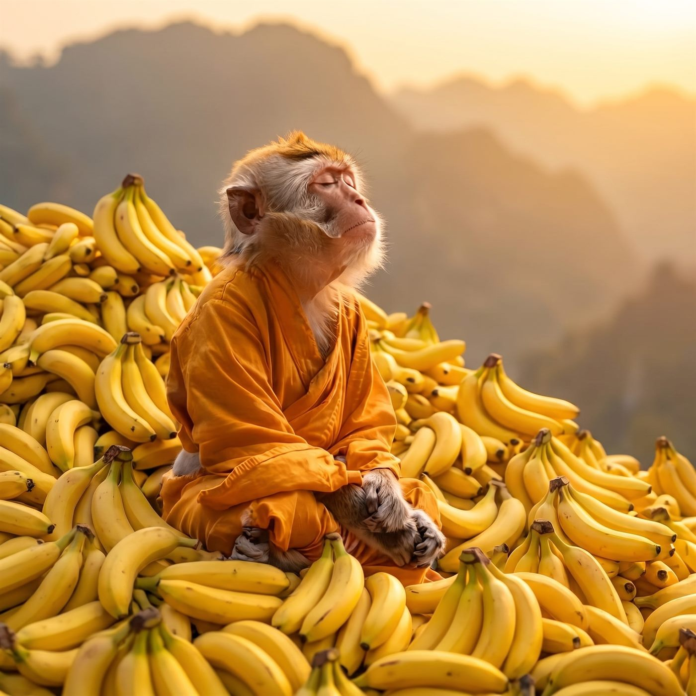

The Monkey Mind
The old teachers had a word for it: kapicitta, the monkey mind. It swings from branch to branch and never once chooses a branch — thought to thought, want to want, and every new noise turns its head. Monk was born with the worst case in the forest. He reached for the ripe fruit and then for the unripe, for what he already held and for what he did not, and woke every morning poorer than he had gone to sleep.
